#install.packages("gridExtra")
library(gridExtra) #combining and organizing multiple ggplotsbeginR: Joining, Reshaping & Models
Data and other downloads
Today
- Joining / Merging datasets
bind_rowsandbind_colsinner_join- “Outer Joins” -
full_join,left_join,right_join
- Reshaping data
pivot_longerpivot_wider
- Basic intution about modeling in R.
Note: we are referring you to the first edition of R4DS here because the second edition dropped the chapters on modeling. The second edition refers readers to the Tidy Modeling with R, which is the Tidyverse framework for predictive modeling, but we feel it is better to start with the material from the first edition.
library(tidyverse)Motivation: Joining and Reshaping with tidyr
In most of our lessons so far, we’ve typically focused on a single dataset. This week, we’ll cover different methods for combining multiple datasets and transforming the shape of our data.
When using data that includes similar observational units collected by different sources, we will often find ourselves with multiple datasets that need to be combined before we can begin analysis. For example, if we wanted to gather various pieces of information for all of the countries in the world, we’d need to merge or join multiple datasets coming from the UN, the World Bank, the World Health Organization, etc. Or, we may simply need to add observations to an existing dataset (e.g. if we have multiple datasets coming from the World Bank, but each dataset only covers a single year.)
In other cases, we might need to reshape data we already have to make it more appropriate for other software, for analysis, or easier to use within R. If you’re planning to export data from R to another software package, you may need a particular format. For example, mapping software like ArcGIS needs each row of a dataset to represent a geographic location.
Merging / Joining Dataframes
Appending
Sometimes we’ll have two datasets with similar columns that we need to combine. Essentially, we are stacking the rows of those datasets on top of each other. We can combine rows in dplyr with bind_rows:
Dataset 1
a0 <- data.frame("StudentID"=c(1,2),
"GPA_change"=rnorm(2,0,1))
print(a0) StudentID GPA_change
1 1 0.09423537
2 2 -1.61822122Dataset 2
a1 <- data.frame("StudentID"=c(3,4),
"GPA_change"=rnorm(2,0,1),
"Semester"=c("Spring","Fall"))
print(a1) StudentID GPA_change Semester
1 3 0.5456792 Spring
2 4 0.9071179 FallDatasets combined
bind_rows(a0,a1) StudentID GPA_change Semester
1 1 0.09423537 <NA>
2 2 -1.61822122 <NA>
3 3 0.54567923 Spring
4 4 0.90711790 FallWhen we refer to merging or joining, we usually do not mean appending or adding observations to a dataset in this way. Instead, joining usuallly intends to add columns or variables to our dataframe. R does have a bind_cols function, but in the context below, using bind_cols is unhelpful and results in mismatched records.
b0 <- data.frame("name"=c("Marcos","Crystal"),
"year"=c(1993,1996))
b1 <- data.frame("name"=c("Crystal","Marcos"),
"project_num"=c(6,3))
bind_cols(b0,b1)New names:
• `name` -> `name...1`
• `name` -> `name...3` name...1 year name...3 project_num
1 Marcos 1993 Crystal 6
2 Crystal 1996 Marcos 3Instead, we want to add columns while making sure certain identifying variables, often called keys (e.g. name and name1 above) line up correctly. That way, each row represents information about a single observational unit.
Merging
Keys
To properly line up observations between two datasets, we need a common variable (or group of variables) that uniquely identifies an observation in at least one of the datasets, and identifies it in the same way across both datasets. This variable is usually called a “key”. In our example above, b0 and b1 have the key “name”.
print(b0) name year
1 Marcos 1993
2 Crystal 1996print(b1) name project_num
1 Crystal 6
2 Marcos 3Once we have matching key variable(s) in our datasets, we can join our datasets into consistent observations. There are two major categories of joins - “Inner Joins” and “Outer Joins”.
Types of Joins
We need several different types of joins to facillitate the different ways datasets are organized.
| Join Type | Want to keep | Function |
|---|---|---|
| Inner Join | Only the rows in both datasets | inner_join() |
| Full (Outer) Join | All of the rows | full_join() |
| Left (Outer) Join | All of the rows in the first (left) dataset, only the matches from the second (right) dataset | left_join() |
| Right (Outer) Join | All of the rows in the second (left) dataset, only the matches from the first (right) dataset | right_join() |
The join types can be represented as Venn Diagrams. The lighter parts of the circles represent unmatched records we are leaving out of the join, while the darker parts represent both matched and unmached records we are keeping in the join.

Take a look at these two datasets:
b0 <- data.frame("name"=c("Marcos","Crystal","Devin","Lilly"),
"year"=c(1993,1996,1985,2001))
b1 <- data.frame("person"=c("Marcos","Crystal","Devin","Tamera"),
"project_num"=c(6,3,9,8))print(b0) name year
1 Marcos 1993
2 Crystal 1996
3 Devin 1985
4 Lilly 2001print(b1) person project_num
1 Marcos 6
2 Crystal 3
3 Devin 9
4 Tamera 8Now, let’s merge them using each of the different join types.
Inner Join
inner_join
inner_join(b0,b1,by=c("name"="person")) name year project_num
1 Marcos 1993 6
2 Crystal 1996 3
3 Devin 1985 9Outer Joins
full_join
full_join(b0,b1,by=c("name"="person")) name year project_num
1 Marcos 1993 6
2 Crystal 1996 3
3 Devin 1985 9
4 Lilly 2001 NA
5 Tamera NA 8left_join
left_join(b0,b1,by=c("name"="person")) name year project_num
1 Marcos 1993 6
2 Crystal 1996 3
3 Devin 1985 9
4 Lilly 2001 NAright_join
right_join(b0,b1,by=c("name"="person")) name year project_num
1 Marcos 1993 6
2 Crystal 1996 3
3 Devin 1985 9
4 Tamera NA 8Extensions
Multiple Keys
In some cases, we may need multiple keys to uniquely identify an observation. For example, our datasets below have two different observations for each person, so we need to join them by both name and year.
multi0 <- data.frame("name"=c("Tamera","Zakir","Zakir","Tamera"),
"year"=c(1990,1990,1991,1991),
"state"=c("NC","VA","VA","NY"))
multi1 <- data.frame("person"=c("Tamera","Zakir","Zakir","Tamera"),
"year"=c(1990,1990,1991,1991),
"project_num"=c(6,3,9,8))
multijoined <- inner_join(multi0,multi1,
by=c("name"="person","year"="year"))
multijoined name year state project_num
1 Tamera 1990 NC 6
2 Zakir 1990 VA 3
3 Zakir 1991 VA 9
4 Tamera 1991 NY 8Many-to-one and One-to-many Joins
If we only specify enough key variables to uniquely identify observations in one dataset and not the other, each unique value from the first dataset will be joined to each instance of that value in the other dataset.
statedata <- data.frame("state"=c("NC","VA","NY"),
"region"=c("Southeast","Southeast","Northeast"))
inner_join(statedata,multijoined,by=c("state"="state")) state region name year project_num
1 NC Southeast Tamera 1990 6
2 VA Southeast Zakir 1990 3
3 VA Southeast Zakir 1991 9
4 NY Northeast Tamera 1991 8Note: We can equivalently omit by=c("state"="state") since the key variables have the same name here.
Reshaping with tidyr
Once we have a single dataset, we may still need to change its shape. When we talk about the shape of a dataset, we are often referring to whether it is wide or long.
Wide dataset - typically includes more columns and fewer rows with a single row for each observation
Long dataset - typically includes fewer columns and more rows with multiple rows for each observation
The many functions used in R for changing a datasets’ shape have varied over the years along with the terminology (e.g. “reshape”, “melt”, “cast”, “tidy”, “gather”, “spread”, “pivot”, etc.) We will now be working with the new reshaping functions recommended by tidyverse, pivot_longer() and pivot_wider().
Hadley Wickham’s Tidy Data provides more discussion of what “Tidy Data” entails and why it’s useful in data analysis.
Use Case: Making ggplot easier
Why reshape when we have perfectly good data? Sometimes R’s own functions are more convenient with reshaped data. Consider the dataset below in which we’ve generated random numbers for columns A and B.
set.seed(123)
df0 <- data.frame(year=c(2000,2001,2002),
A=runif(3,0,20),
B=runif(3,0,20))
print(df0) year A B
1 2000 5.751550 17.66035
2 2001 15.766103 18.80935
3 2002 8.179538 0.91113Now we want to create a line plot in which each column has its own line. Because our dataset is wide, we’ll need to add each line to the plot separately and individually.
ggplot(data=df0,aes(x=year)) +
geom_line(aes(y=A),color="red") +
geom_line(aes(y=B),color="blue") +
theme_bw()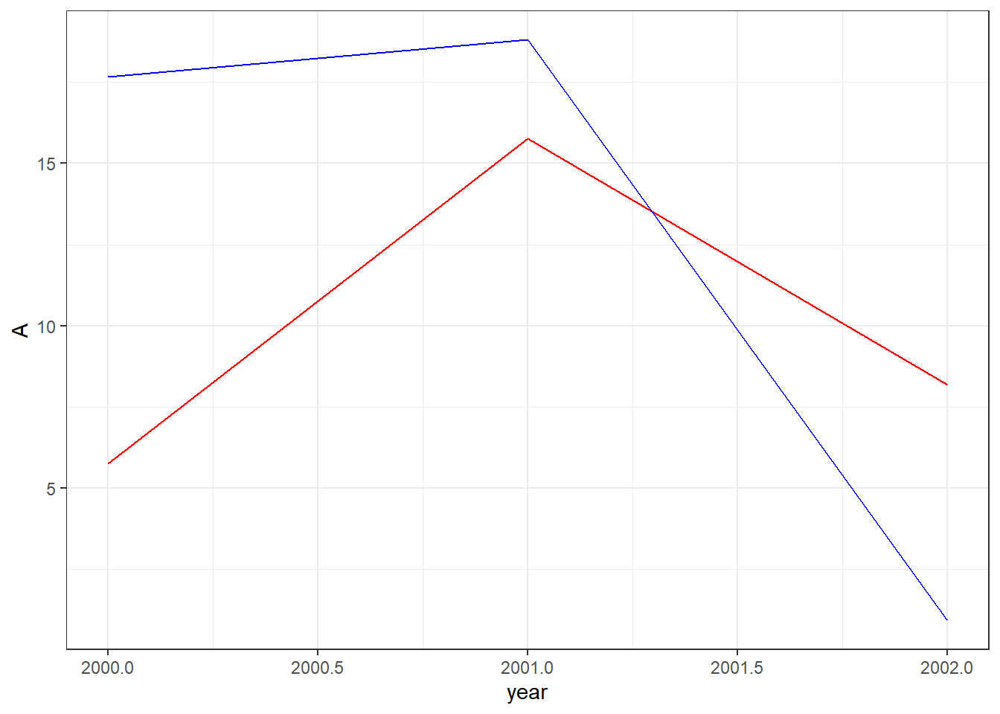
However, if we were using a long dataset, we could create the plot with less code. Note how our dataset below has a single column for categories A and B.
df1 <- data.frame(year=c(df0$year,df0$year),
category=c("A","A","A","B","B","B"),
value=c(df0$A,df0$B))
print(df1) year category value
1 2000 A 5.751550
2 2001 A 15.766103
3 2002 A 8.179538
4 2000 B 17.660348
5 2001 B 18.809346
6 2002 B 0.911130And for our plot, we only need to add a single geom_line while using the category column for our color aesthetic.
ggplot(data=df1,aes(x=year,y=value,color=category))+
geom_line()+
theme_bw()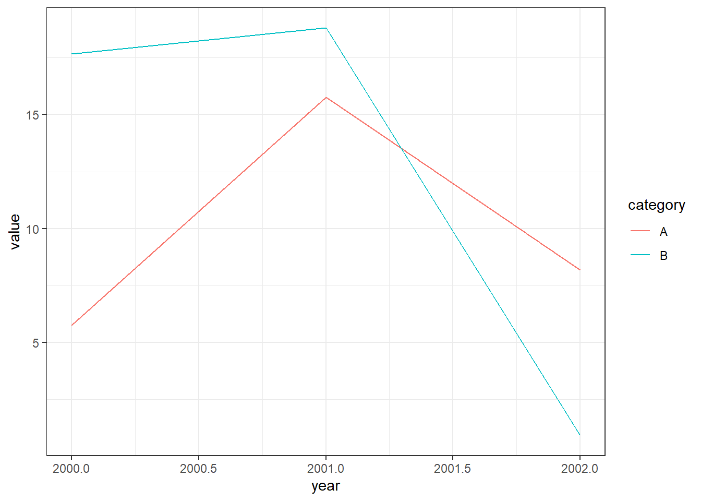
This may not seem like much of a big deal for this particular plot, but what if we were trying to plot hundreds of lines?
We can move back and forth between the long shape used by df1 and the wide shape used by df0 with tidyr’s pivot_longer and pivot_wider functions.
pivot_longer
First, let’s create a small example dataset with four columns of randomly generated numbers.
set.seed(123)
raw <- data.frame(
City=c("Raleigh","Durham","Chapel Hill"),
x2000=rnorm(3,0,1),
x2001=rnorm(3,0,1),
x2002=rnorm(3,0,1),
x2003=rnorm(3,0,1)
)
print(raw) City x2000 x2001 x2002 x2003
1 Raleigh -0.5604756 0.07050839 0.4609162 -0.4456620
2 Durham -0.2301775 0.12928774 -1.2650612 1.2240818
3 Chapel Hill 1.5587083 1.71506499 -0.6868529 0.3598138x2000 through x2003 represent something measured in 2000 to 2003, since R data.frames cannot have labels that start with numbers.
In the dataset above, we have information stored in separate columns for each year, but it might be more useful to store the year number itself in its own column. We can use the pivot_longer function to do this.
pivot_longer takes four main arguments:
data: this must be a data frame.
cols: a list of column names that we want to pivot into a single column.
names_to: the name of the new column that will contain the names of the columns we are pivoting.
values_to: the name of another new column that will contain values of the columns we are pivoting.
We can also use various other arguments with pivot_longer that allow us to do a number of handy things. For example, the names_prefix argument lets us remove the “x” in front of our year names. Run ?pivot_longer in your console for a full list of arguments that can be used.
longpivot <- raw |>
pivot_longer(cols = starts_with("x"),
names_to = "Year",
values_to = "Value",
names_prefix = "x")
print(longpivot)# A tibble: 12 × 3
City Year Value
<chr> <chr> <dbl>
1 Raleigh 2000 -0.560
2 Raleigh 2001 0.0705
3 Raleigh 2002 0.461
4 Raleigh 2003 -0.446
5 Durham 2000 -0.230
6 Durham 2001 0.129
7 Durham 2002 -1.27
8 Durham 2003 1.22
9 Chapel Hill 2000 1.56
10 Chapel Hill 2001 1.72
11 Chapel Hill 2002 -0.687
12 Chapel Hill 2003 0.360 It’s often useful to think about how transformations like pivot_longer change the effective observational unit of the dataset. This dataset started with city-level observations in which each row was represented by a unique city name. The transformed data frame longpivot now observes one city in a given year in each row, so we now have multiple rows for the same city.
pivot_wider
We can reverse our previous transformation with pivot_wider. This time, we’ll create a separate column for each city.
pivot_wider takes three essential arguments:
data
names_from: the column whose values we’ll use to create new column names.
values_from: another column whose values we’ll use to fill the new columns.
widepivot <- longpivot |>
pivot_wider(names_from = City, values_from = Value)
print(widepivot)# A tibble: 4 × 4
Year Raleigh Durham `Chapel Hill`
<chr> <dbl> <dbl> <dbl>
1 2000 -0.560 -0.230 1.56
2 2001 0.0705 0.129 1.72
3 2002 0.461 -1.27 -0.687
4 2003 -0.446 1.22 0.360Why would we want each city to have its own column? Well, it might be a useful step to determine which cities are most closely correlated as part of an Exploratory Data Analysis process. For example, we can now easily use this dataset with ggally to create a plot matrix.
library(GGally)
widepivot |>
select("Chapel Hill","Durham","Raleigh") |>
ggpairs()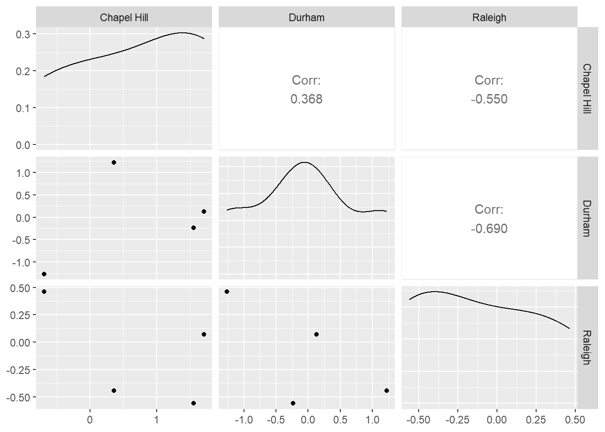
Modeling
What is a model?
A model is another tool to summarize the information in a dataset. This often comes in the form of approximations that make it easier to interpret and generalize relationships to new data. Ideally a model represents the “signal” in the data while ignoring unimportant or ungeneralizable “noise.”
For today we’ll mainly consider “supervised models”. A supervised model aims to predict some target variable(s) and requires that we have observed these variables alongside the factors we want to use to predict it. This target variable is sometimes called a “dependent” or “response” variable. Today’s lesson will focus on a specific form of supervised model, the linear model, also known as ordinary least squares regression (OLS) or the general linear model (not to be confused with generalized linear models).
Unsupervised models don’t distinguish between response and predictor variables and instead look for patterns among variables more generally. Clustering is one of the most commonly used unsupervised learning methods. We will not be covering unsupervised models today.
Simple Linear Models with Plots
For these plots, we’ll use moddf provided via the code below. The url function combined with read_csv allows us to directly import content from the internet into our R session.
We’ll look at the code to generate moddf at the end of this section.
moddf <- read_csv(url("https://unc-libraries-data.github.io/beginR/week10_models/moddf.csv"))
head(moddf)# A tibble: 6 × 2
x y
<dbl> <dbl>
1 11.2 41.4
2 13.7 49.5
3 14.9 48.7
4 14.1 47.1
5 7.29 18.8
6 4.25 14.2Since these are both continuous numeric variables, let’s plot them with a scatterplot.
ggplot(data=moddf,aes(x=x,y=y))+geom_point()+theme_bw()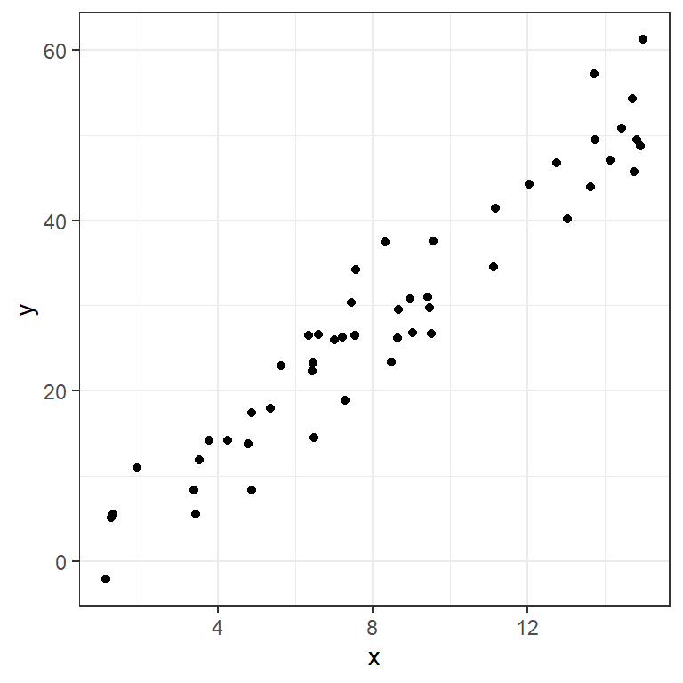
One of the simplest ways to model data like this is with a line capturing the trend. We can model a line with an interpretable formula:
\[y= intercept + slope * x\]
Given a new x value, we could predict the corresponding y by plugging it into this equation. We can also get observations for the x values we have observed.
We can plot some candidate line(s) with geom_abline:
ggplot(data=moddf,aes(x=x,y=y))+geom_point()+
geom_abline(intercept=-1,slope=3.6,color="blue")+
geom_abline(intercept=2,slope=3,color="orange")+
theme_bw()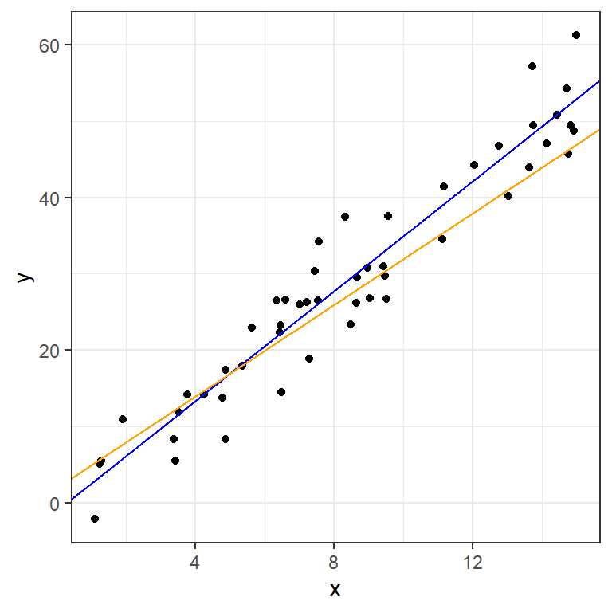
How do we choose between lines? A common metric, especially in prediction, involves measuring our misses with residuals:
residual = actual value - prediction
These can be graphically represented as lines parallel to the y-axis:
moddf$p1 <- -1 + 3.6 * moddf$x
moddf$p2 <- 2 + 3 * moddf$x
plot1 <- ggplot(data=moddf,aes(x=x,y=y))+geom_point()+
geom_abline(intercept=2,slope=3,color="orange")+
geom_segment(aes(x = x, y = y,
xend = x, yend = p2),color="orange")+
theme_bw()
plot2 <- ggplot(data=moddf,aes(x=x,y=y))+geom_point()+
geom_abline(intercept=-1,slope=3.6,color="blue")+
geom_segment(aes(x = x, y = y,
xend = x, yend = p1),color="blue")+
theme_bw()
grid.arrange(plot1,plot2,ncol=2)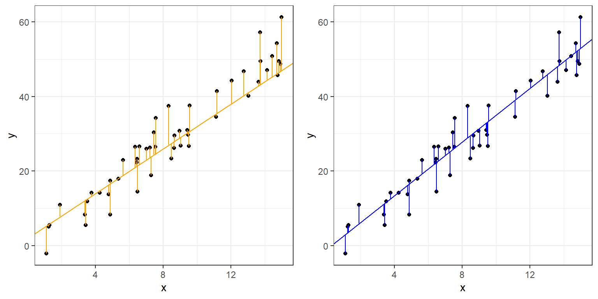
Ordinary Least Squares (OLS), often referred to simply as “Linear Regression”, finds the line that minimizes the sum of the squared residuals above.
We can fit an OLS with lm in R, and get a standard statistical summary with summary.
fit <- lm(y ~ x, data = moddf)
summary(fit)
Call:
lm(formula = y ~ x, data = moddf)
Residuals:
Min 1Q Median 3Q Max
-7.8708 -3.5818 0.3781 2.2938 9.2515
Coefficients:
Estimate Std. Error t value Pr(>|t|)
(Intercept) -1.3372 1.4409 -0.928 0.358
x 3.5962 0.1545 23.280 <2e-16 ***
---
Signif. codes: 0 '***' 0.001 '**' 0.01 '*' 0.05 '.' 0.1 ' ' 1
Residual standard error: 4.439 on 48 degrees of freedom
Multiple R-squared: 0.9186, Adjusted R-squared: 0.9169
F-statistic: 541.9 on 1 and 48 DF, p-value: < 2.2e-16The arguments given to lm are:
Formula:
y~xR uses
~in place of the equals sign in formulasR automatically includes an intercept term
This formula is therefore equivalent to:
\[y=intercept + slope * x\]
- Data:
- The dataframe containing the variables of interest.
The values listed under Estimate provide estimates for the intercept,-1.3371543, and slope,3.5962276.
moddf$lm <- predict(fit)
ggplot(data=moddf, aes(x=x, y=y)) +
geom_point(color="black") +
geom_abline(intercept=fit$coefficients[1],slope=fit$coefficients[2],size=1.1,alpha=0.8,color="black") +
geom_abline(intercept=2,slope=3,color="orange")+
geom_abline(intercept=-1,slope=3.6,color="blue")+
geom_segment(aes(x = x, y = y,
xend = x, yend = lm)) +
theme_bw()Warning: Using `size` aesthetic for lines was deprecated in ggplot2 3.4.0.
ℹ Please use `linewidth` instead.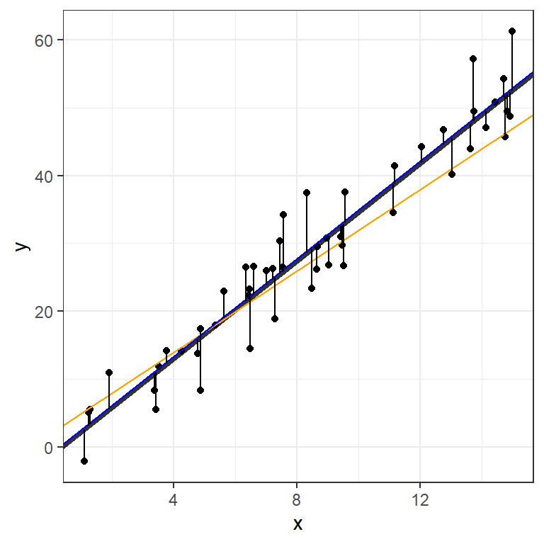
We can visualize the OLS model’s point estimates and confidence bands like this:
moddf.predict <- cbind(moddf, predict(fit, interval = 'confidence'))
ggplot(moddf.predict, aes(x, y)) +
geom_point() +
geom_line(aes(x, lm)) +
geom_ribbon(aes(ymin=lwr,ymax=upr), alpha=0.3)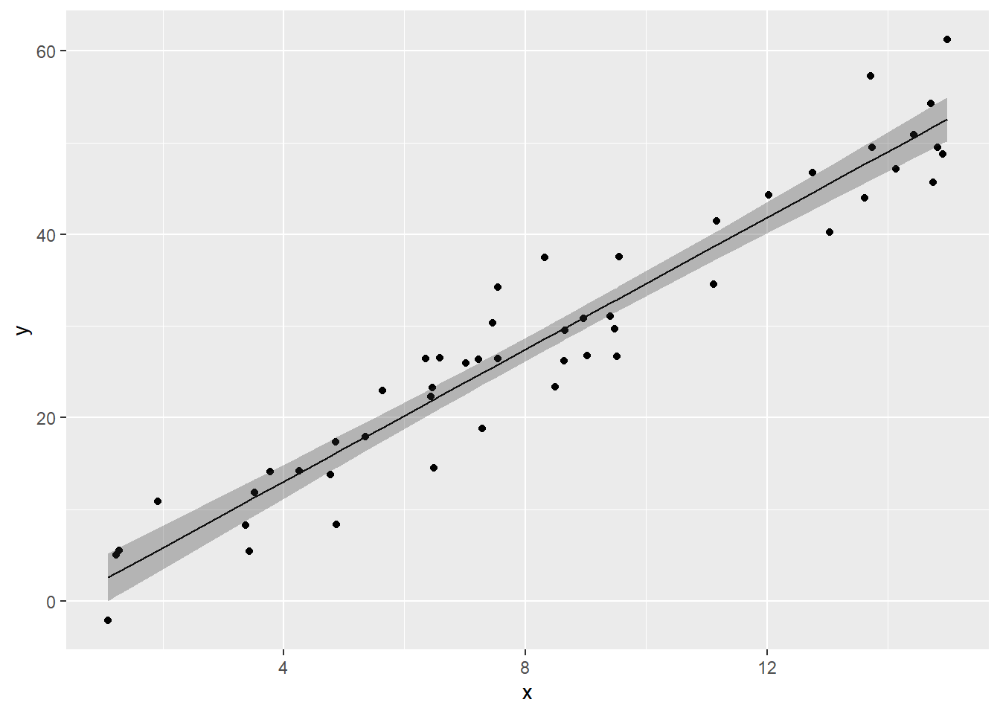
Finally, here’s the code used to generate our dataset:
x <- runif(50,0,15)
y <- 3.4 * x + rnorm(50,0,5)
moddf <- data.frame(x,y)The “true” values, obscured by random noise, were:
- intercept = 0
- slope = 3.4
The OLS did a pretty good job determining these numbers. We’ll return to this idea of generating data in a bit.
Multiple Regression - Formula notation in R
OLS can be extended to include multiple predictors. Let’s experiment with the built-in mtcars dataset.
data(mtcars)
str(mtcars)'data.frame': 32 obs. of 11 variables:
$ mpg : num 21 21 22.8 21.4 18.7 18.1 14.3 24.4 22.8 19.2 ...
$ cyl : num 6 6 4 6 8 6 8 4 4 6 ...
$ disp: num 160 160 108 258 360 ...
$ hp : num 110 110 93 110 175 105 245 62 95 123 ...
$ drat: num 3.9 3.9 3.85 3.08 3.15 2.76 3.21 3.69 3.92 3.92 ...
$ wt : num 2.62 2.88 2.32 3.21 3.44 ...
$ qsec: num 16.5 17 18.6 19.4 17 ...
$ vs : num 0 0 1 1 0 1 0 1 1 1 ...
$ am : num 1 1 1 0 0 0 0 0 0 0 ...
$ gear: num 4 4 4 3 3 3 3 4 4 4 ...
$ carb: num 4 4 1 1 2 1 4 2 2 4 ...We add more variables with extentions to R’s formula notation:
| Symbol | Role | Example | Equivalent |
|---|---|---|---|
+ |
Add variable | mpg~vs+disp |
\[mpg = intercept + \beta_1 vs + \beta_2 disp\] |
* |
Interactions | mpg~vs*disp |
\[mpg = intercept + \beta_1 vs + \beta_2 disp + \beta_3 vs*disp\] |
. |
Include all variables in dataframe | mpg~. |
\[mpg = intercept + \beta_1 cyl + \beta_2 disp + ... + \beta_{10} carb\] |
- |
Exclude variable | mpg~.-disp-hp |
\[mpg = intercept + \beta_1 cyl + \beta_2 drat + ... + \beta_{8} carb\] |
Examples:
summary(lm(data=mtcars,mpg~vs+disp))
Call:
lm(formula = mpg ~ vs + disp, data = mtcars)
Residuals:
Min 1Q Median 3Q Max
-5.4605 -2.0260 -0.6467 1.7285 7.0790
Coefficients:
Estimate Std. Error t value Pr(>|t|)
(Intercept) 27.949282 2.201166 12.697 2.27e-13 ***
vs 1.495004 1.651290 0.905 0.373
disp -0.036896 0.006715 -5.494 6.43e-06 ***
---
Signif. codes: 0 '***' 0.001 '**' 0.01 '*' 0.05 '.' 0.1 ' ' 1
Residual standard error: 3.261 on 29 degrees of freedom
Multiple R-squared: 0.7261, Adjusted R-squared: 0.7072
F-statistic: 38.44 on 2 and 29 DF, p-value: 7.005e-09We can use some familiar tidyverse tool to visualize this fit:
d <- mtcars |> select(mpg, vs, disp)
fit2 <- lm(mpg ~ vs + disp, data = d)
d$predicted <- predict(fit2)
d$residuals <- residuals(fit2)
d |>
pivot_longer(-c(mpg,predicted,residuals),names_to = "iv", values_to="x") |>
ggplot(aes(x = x, y = mpg)) +
geom_point(aes(y = predicted), shape = 1) +
facet_grid(~ iv, scales = "free") +
theme_bw()
What does -1 do below?
summary(lm(data=mtcars,mpg~vs*hp+disp-1))
Call:
lm(formula = mpg ~ vs * hp + disp - 1, data = mtcars)
Residuals:
Min 1Q Median 3Q Max
-10.4960 -3.2474 -0.3531 4.3101 19.0605
Coefficients:
Estimate Std. Error t value Pr(>|t|)
vs 38.9990553 7.2131470 5.407 9.13e-06 ***
hp 0.0757879 0.0261494 2.898 0.00721 **
disp 0.0003558 0.0159033 0.022 0.98231
vs:hp -0.2343856 0.0769152 -3.047 0.00500 **
---
Signif. codes: 0 '***' 0.001 '**' 0.01 '*' 0.05 '.' 0.1 ' ' 1
Residual standard error: 6.733 on 28 degrees of freedom
Multiple R-squared: 0.9096, Adjusted R-squared: 0.8967
F-statistic: 70.44 on 4 and 28 DF, p-value: 3.339e-14More on modeling
You can learn more about common extensions to linear models in R For Data Science:
Transformations, 23.4.4 Linear models alone are often the foundation for an entire semester long course; taught in a variety of discipline-specific settings as well as the Biostatistics and Statistics and Operations Research departments.
Simulations
There’s a very powerful idea hidden in the bit of code we used to generate the first dataset:
x <- runif(50,0,15)
y <- 3.4 * x + rnorm(50,0,5)
moddf <- data.frame(x,y)This block of code generates random data according to our specifications. Unlike most fields of science, where you have to actively gather data, statisticians can use random number generators. This underlies the most commonly used computational tool in statistics: the simulation study.
In a typical simulation study we Generate data according to a known data generation process. Then we Analyze data using the method we want to investigate. Finally we Summarize the simulation study using either tables or graphs.
Let’s use this tool to study the sampling distribution of a regression slope using the same data generating process as before:
- intercept = 0
- slope = 3.4
Sample size and the sampling distribution of the regression slope
nsims <- 100
sample_size <- 32
int <- vector("numeric", nsims)
sl <- vector("numeric", nsims)
for (i in 1:nsims){
#Generate
x <- runif(sample_size,0,15)
y <- 3.4 * x + rnorm(sample_size,0,5)
moddf <- data.frame(x,y)
#Analyze
fit <- lm(y ~ x, data = moddf)
int[i] <- coef(fit)[1]
sl[i] <- coef(fit)[2]
}
sim_results <- data.frame(int, sl)
#Summarize
ggplot(sim_results) +
geom_abline(intercept=int, slope=sl, alpha = 0.2) +
xlim(0, 15) +
ylim(0, 60)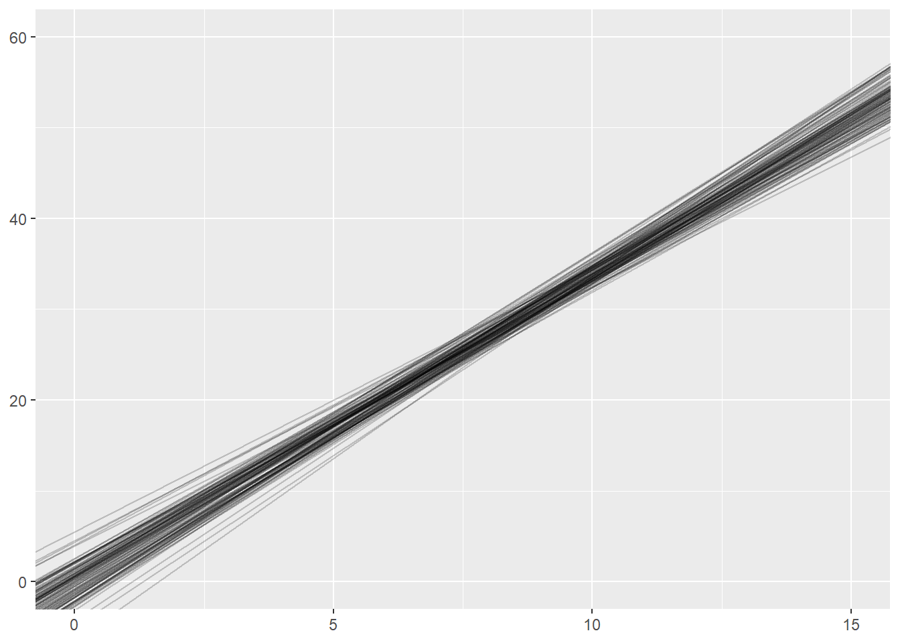
What happens if we change the sample_size within each simulation from 32 to 8? or to 1024?
What is a 95% confidence interval?
nsims <- 100
sample_size <- 32
index <- vector("numeric", nsims)
lower <- vector("numeric", nsims)
upper <- vector("numeric", nsims)
for (i in 1:nsims){
x <- runif(sample_size, 0, 15)
y <- 3.4 * x + rnorm(sample_size, 0, 5)
moddf <- data.frame(x,y)
fit <- lm(y ~ x, data = moddf)
index[i] <- i
lower[i] <- confint(fit)[2,1]
upper[i] <- confint(fit)[2,2]
}
sim_results <- data.frame(index, lower, upper)
ggplot(sim_results) +
geom_segment(y = index, yend = index, x = lower, xend = upper) +
geom_segment(y = -5, yend = 110, x = 3.4, xend = 3.4, color = "blue") +
xlim(0, 5) +
ylim(0,101)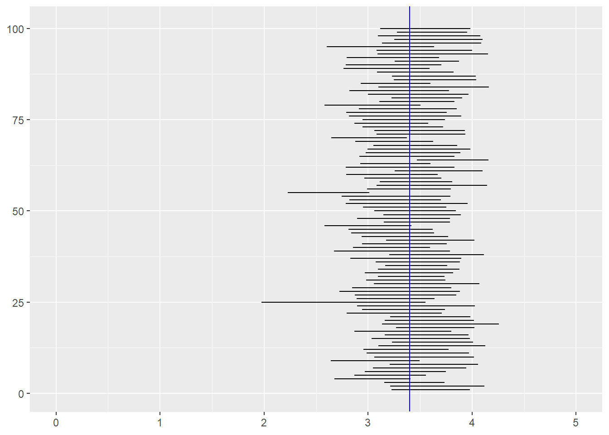
The confidence level (say 95%) of a confidence interval does not apply to a particular confidence interval. Rather, it applies to the procedure. If you collect one sample of data, fit a model, and the look at the confidence interval, the true value is either inside that interval or it is not (unfortunately, we usually don’t know whether the true value is inside the interval). However, if you repeat the study 1000 times and fit precisely the same model to each of those 1000 datasets, about 95% of the 1000 confidence intervals you estimate will contain the true value.
Of course, this is all assuming you are fitting the correct model, but that is a discussion beyond the scope of this workshop!
Reproducible simulations
Much of our focus this semester has been on reproducible workflows and reproducible reports. How can we make a simulation study reproducible when it involves generating random numbers? The random number generators in R are actually pseudo-random number generators. They take a seed value and then generate a sequence of number that are randomly drawn from a given distribution, but if you use the same seed, the sequence of number will be exactly the same. If you run the following code, you should get the same five lines that are present on this webpage.
set.seed(1234)
nsims <- 5
sample_size <- 8
int <- vector("numeric", nsims)
sl <- vector("numeric", nsims)
for (i in 1:nsims){
x <- runif(sample_size, 0, 15)
y <- 3.4 * x + rnorm(sample_size, 0, 5)
moddf <- data.frame(x,y)
fit <- lm(y ~ x, data = moddf)
int[i] <- coef(fit)[1]
sl[i] <- coef(fit)[2]
}
sim_results <- data.frame(int, sl)
ggplot(sim_results) +
geom_abline(intercept=int, slope=sl, alpha = 0.2) +
xlim(0, 15) +
ylim(0, 60)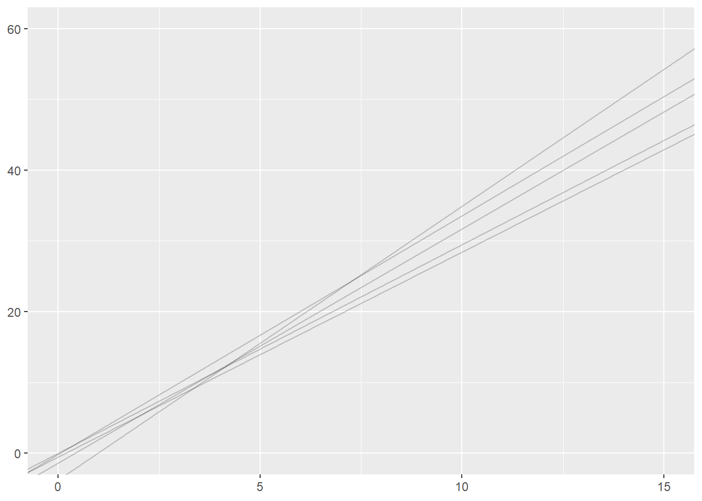
Exercise Data
Data derived from Brazilian E-Commerce Public Dataset by Olist provided on Kaggle.com under a CC BY-NC-SA 4.0 license.
Cleaned data courtesy of the Tidy Tuesday project
Exercises:
Merge and Reshape
All of today’s exercises involve the datasets included in brazilian-commerce-subset.zip.
Read olist_public_dataset_v2.csv into R. Explore the dataset. If necessary, refer to the metadata provided here.
Read product_category_name_translation.csv into R. Merge this dataframe into olist_public_dataset_v2.csv using
product_category_nameas the key variable.Let’s explore which products are most frequently purchased together:
Use
group_byandsummarizeto find the totalorder_items_qtyfor eachproduct_category_name_englishin eachcustomer state. ReviewUse
pivot_widerto create a new dataframe with a row for eachcustomer_stateand a column for eachproduct_category_name_english. Name this dataframeproducts.Run the two lines of code below (make sure your dataframe from step 4 is called
products!)products <- ungroup(products) #remove grouping products[is.na(products)] <- 0 #replace missing data with zeroesUse
ggpairsor other Exploratory Data Analysis techniques to look for relationships between purchases ofsmall_appliances,consoles_games,air_conditioning, andconstruction_tools_safety. (Remember to runlibrary(GGally)before usingggpairs).Repeat problems 3-6 with
order_products_value(i.e. the amount spent vs the quantity purchased). Do you see different patterns? Explore other product categories.Use
pivot_longerand thenpivot_widerto convert yourproductsdataframe to one where each row is a differentproduct_category_name_englishand each column represents a differentcustomer_state.Choose 5 states. Which of these states have the most similar patterns of spending (as measured by correlation)?
Models
Explore the datasets included with the built-in
datasetspackage by runningdata(package="datasets"). You can get more information about any given dataset with?<dataset name>. Choose a dataset with at least a few numeric variables.Use
str,head,summaryand any of our EDA techniques to explore the dataset. Pick a continuous outcome variable of interest and choose some predictors.Fit an
lmwith your selected variables.Use your intial
lmfit to create a regression table output. Embed in an Quarto document or output an html file. Use?modelsummaryto learn about and then change one or more default settings.